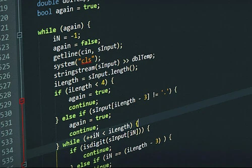
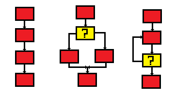
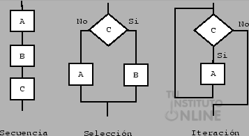
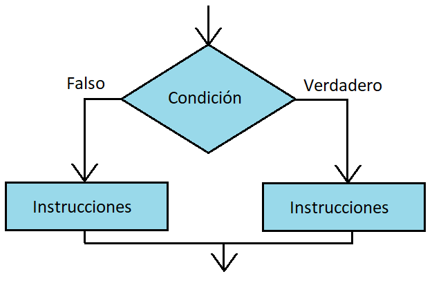
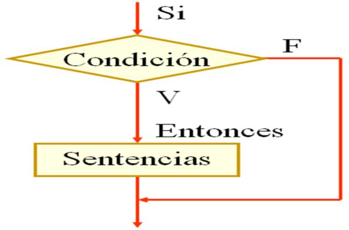
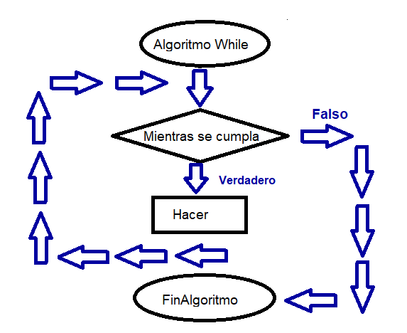
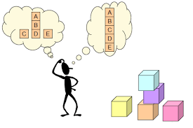

Lenguaje C: Historia y Características
Historia:
Desarrollado en 1972 por Dennis Ritchie en los Laboratorios Bell, el lenguaje C fue creado como una mejora del lenguaje B y BCPL. Originalmente se diseñó para ayudar en el desarrollo del sistema operativo UNIX, que necesitaba un lenguaje flexible y eficiente.
Desde su lanzamiento, C se ha convertido en uno de los lenguajes más influyentes y utilizados en la programación. Su éxito se debe a su capacidad para acceder y manipular hardware y su estructura que permite crear código eficiente.
En la década de los 80, el lenguaje C fue estandarizado por el ANSI (American National Standards Institute), creando lo que se conoce como ANSI C. Posteriormente, el estándar fue adoptado por la ISO (International Organization for Standardization).
Portabilidad: Es uno de los lenguajes más portables, lo que significa que los programas escritos en C se pueden ejecutar en diferentes plataformas con mínimas modificaciones, haciéndolo ideal para software de propósito general.
Lenguaje de bajo nivel: Aunque C es considerado de alto nivel, posee características de bajo nivel que permiten trabajar con direcciones de memoria, lo cual es esencial para la programación de sistemas embebidos y sistemas operativos.
Control manual de la memoria: Utiliza funciones como malloc y free para manejar la memoria de manera dinámica, lo que permite optimizar el uso de recursos, aunque también requiere una gestión cuidadosa para evitar errores como fugas de memoria.
Sintaxis concisa: A pesar de su potencia, la sintaxis de C es concisa y clara, lo que permite a los programadores expresar algoritmos complejos de forma compacta.
Biblioteca estándar: C incluye una rica biblioteca estándar que proporciona funciones para entradas/salidas (stdio.h), manejo de cadenas (string.h), matemáticas (math.h), entre otras.
Inicio
Desarrollado en 1972 por Dennis Ritchie en los Laboratorios Bell, el lenguaje C fue creado como una mejora del lenguaje B y BCPL. Originalmente se diseñó para ayudar en el desarrollo del sistema operativo UNIX, que necesitaba un lenguaje flexible y eficiente.
Desde su lanzamiento, C se ha convertido en uno de los lenguajes más influyentes y utilizados en la programación. Su éxito se debe a su capacidad para acceder y manipular hardware y su estructura que permite crear código eficiente.
En la década de los 80, el lenguaje C fue estandarizado por el ANSI (American National Standards Institute), creando lo que se conoce como ANSI C. Posteriormente, el estándar fue adoptado por la ISO (International Organization for Standardization).

Características: Portabilidad: Es uno de los lenguajes más portables, lo que significa que los programas escritos en C se pueden ejecutar en diferentes plataformas con mínimas modificaciones, haciéndolo ideal para software de propósito general.
Lenguaje de bajo nivel: Aunque C es considerado de alto nivel, posee características de bajo nivel que permiten trabajar con direcciones de memoria, lo cual es esencial para la programación de sistemas embebidos y sistemas operativos.
Control manual de la memoria: Utiliza funciones como malloc y free para manejar la memoria de manera dinámica, lo que permite optimizar el uso de recursos, aunque también requiere una gestión cuidadosa para evitar errores como fugas de memoria.
Sintaxis concisa: A pesar de su potencia, la sintaxis de C es concisa y clara, lo que permite a los programadores expresar algoritmos complejos de forma compacta.
Biblioteca estándar: C incluye una rica biblioteca estándar que proporciona funciones para entradas/salidas (stdio.h), manejo de cadenas (string.h), matemáticas (math.h), entre otras.
Tipos de Datos en Leguaje C
En C, los tipos de datos determinan qué tipo de valor puede
almacenar una variable y cuánta memoria ocupará. C cuenta con una
variedad de tipos de datos que se clasifican en categorías básicas y
derivadas:
1. Tipos de datos básicos
Estos son los tipos más utilizados y proporcionan los elementos fundamentales para la construcción de un programa:
int (entero):
Representa números enteros, tanto positivos como negativos.
El tamaño de int puede variar entre sistemas, pero comúnmente ocupa 4 bytes, permitiendo almacenar un rango de valores desde -2,147,483,648 a 2,147,483,647.
float (flotante):
Se usa para almacenar números con punto decimal (números reales) de precisión simple.
Ocupa 4 bytes en la memoria y permite un rango aproximado de 3.4e−38 a 3.4e+38.
double (doble precisión):
Similar a float, pero con mayor precisión, ya que ocupa 8 bytes.
Es útil cuando se necesita mayor exactitud en cálculos matemáticos o científicos.
char (carácter):
Almacena un solo carácter (letra, número o símbolo).
Ocupa 1 byte de memoria y su valor se representa generalmente en el conjunto de caracteres ASCII.
2. Modificadores de tipos de datos
Los modificadores se utilizan para ajustar el rango de los tipos de datos básicos, incrementando o disminuyendo su capacidad de almacenamiento. Los modificadores comunes son:
signed y unsigned:
signed permite almacenar números tanto positivos como negativos (por defecto en int).
unsigned solo permite valores positivos, lo cual dobla el rango positivo de un tipo de dato dado.
short y long:
short reduce el tamaño de almacenamiento de un int, por lo general a 2 bytes.
long incrementa la capacidad de almacenamiento, por lo general a 8 bytes para un long int.
3. Tipos de datos derivados
Estos tipos de datos permiten crear estructuras más complejas:
Arreglos (arrays):
Un arreglo es una colección de elementos del mismo tipo que se almacenan en ubicaciones de memoria contiguas.
Los arreglos pueden ser unidimensionales (vectores) o multidimensionales (matrices).
Punteros (pointers):
Los punteros almacenan la dirección de memoria de una variable, permitiendo manipular la memoria de manera más directa.
Son cruciales para la gestión dinámica de la memoria y para el paso de funciones.
Estructuras (struct):
Permiten combinar diferentes tipos de datos bajo un solo nombre, lo que es útil para agrupar datos relacionados.
Uniones (union):
Al igual que las estructuras, las uniones agrupan diferentes tipos de datos, pero todos los miembros comparten el mismo espacio de memoria.
Esto es útil cuando se necesita almacenar un tipo de dato a la vez, ahorrando espacio.
Enumeraciones (enum):
Define un conjunto de constantes enteras con nombre, lo cual es útil para representar valores predefinidos.
4. Tipos de datos vacíos
void:
Se utiliza para indicar que una función no retorna ningún valor, o que un puntero no apunta a un tipo específico de dato.
Importancia de los tipos de datos
Control de memoria: Los tipos de datos permiten al programador gestionar eficientemente la memoria del sistema, ya que cada tipo de dato ocupa una cantidad específica de espacio.
Precisión en cálculos: La elección de un tipo de dato adecuado es crucial para operaciones matemáticas, ya que puede afectar la precisión y rango de los valores.
 Facilitan la lectura y mantenimiento del código:
Al definir claramente el tipo de datos, se facilita la comprensión
de cómo se espera que las variables se comporten en el programa.
Facilitan la lectura y mantenimiento del código:
Al definir claramente el tipo de datos, se facilita la comprensión
de cómo se espera que las variables se comporten en el programa.
Ejemplos adicionales de tipos de datos en uso
Operaciones matemáticas:
Usando int y float para realizar una división:
Manejo de cadenas:
Las cadenas de texto en C se manejan como arreglos de caracteres, terminadas con un carácter nulo ('\0'):
Inicio
1. Tipos de datos básicos
Estos son los tipos más utilizados y proporcionan los elementos fundamentales para la construcción de un programa:
Representa números enteros, tanto positivos como negativos.
El tamaño de int puede variar entre sistemas, pero comúnmente ocupa 4 bytes, permitiendo almacenar un rango de valores desde -2,147,483,648 a 2,147,483,647.
Int numero = 5;
Se usa para almacenar números con punto decimal (números reales) de precisión simple.
Ocupa 4 bytes en la memoria y permite un rango aproximado de 3.4e−38 a 3.4e+38.
Float temperatura = 36.5;
Similar a float, pero con mayor precisión, ya que ocupa 8 bytes.
Es útil cuando se necesita mayor exactitud en cálculos matemáticos o científicos.
Double pi = 3.141592653589793;
Almacena un solo carácter (letra, número o símbolo).
Ocupa 1 byte de memoria y su valor se representa generalmente en el conjunto de caracteres ASCII.
Char letra = "A";
Los modificadores se utilizan para ajustar el rango de los tipos de datos básicos, incrementando o disminuyendo su capacidad de almacenamiento. Los modificadores comunes son:
signed y unsigned:
signed permite almacenar números tanto positivos como negativos (por defecto en int).
unsigned solo permite valores positivos, lo cual dobla el rango positivo de un tipo de dato dado.
Unsigned int edad = 30; // Solo valores positivos
Signed int temperatura = -5; // Positivos y negativos
short reduce el tamaño de almacenamiento de un int, por lo general a 2 bytes.
long incrementa la capacidad de almacenamiento, por lo general a 8 bytes para un long int.
Short int smallNumber = 100; // Menor rango, menos espacio
Long int largeNumber = 1000000; // Mayor rango, más espacio
Estos tipos de datos permiten crear estructuras más complejas:
Arreglos (arrays):
Un arreglo es una colección de elementos del mismo tipo que se almacenan en ubicaciones de memoria contiguas.
Los arreglos pueden ser unidimensionales (vectores) o multidimensionales (matrices).
Int numeros[5] = {1, 2, 3, 4, 5}; // Arreglo de 5 enteros
Los punteros almacenan la dirección de memoria de una variable, permitiendo manipular la memoria de manera más directa.
Son cruciales para la gestión dinámica de la memoria y para el paso de funciones.
int *ptr;
int numero = 10; ptr = "&numero";
// ptr almacena la dirección de numero
Permiten combinar diferentes tipos de datos bajo un solo nombre, lo que es útil para agrupar datos relacionados.
struct Persona {
char nombre[50];
int edad;
float altura
};
Al igual que las estructuras, las uniones agrupan diferentes tipos de datos, pero todos los miembros comparten el mismo espacio de memoria.
Esto es útil cuando se necesita almacenar un tipo de dato a la vez, ahorrando espacio.
union Datos {
int numero;
float decimal;
char letra;
};
Define un conjunto de constantes enteras con nombre, lo cual es útil para representar valores predefinidos.
enum Dias {LUNES, MARTES, MIERCOLES, JUEVES, VIERNES};
enum Dias hoy = LUNES;
void:
Se utiliza para indicar que una función no retorna ningún valor, o que un puntero no apunta a un tipo específico de dato.
void funcionEjemplo()
{ printf("Esta función no retorna nada.");
}
Control de memoria: Los tipos de datos permiten al programador gestionar eficientemente la memoria del sistema, ya que cada tipo de dato ocupa una cantidad específica de espacio.
Precisión en cálculos: La elección de un tipo de dato adecuado es crucial para operaciones matemáticas, ya que puede afectar la precisión y rango de los valores.
Ejemplos adicionales de tipos de datos en uso
Operaciones matemáticas:
Usando int y float para realizar una división:
int a = 5;
int b = 2;
float resultado = (float)a / b; // Conversión a float para precisió
Las cadenas de texto en C se manejan como arreglos de caracteres, terminadas con un carácter nulo ('\0'):
char saludo[] ="Hola, mundo";
printf("%s", saludo); // Imprime la cadena de caracteres
Estrucrura de Control en Lenguaje C
Las estructuras de control son fundamentales en cualquier lenguaje
de programación, ya que permiten controlar el flujo de ejecución de
un programa, es decir, la manera en que se ejecutan las
instrucciones según ciertas condiciones o repeticiones.
Estructuras de control en C
En C, las estructuras de control se pueden clasificar en dos categorías principales:
1. Estructuras de control de flujo secuencial
2. Estructuras de control de flujo de decisión (selectivas)
3. Estructuras de control de repetición (iterativas)
Este tipo de estructura es la más básica y se refiere a la ejecución de instrucciones de manera secuencial, una tras otra, en el orden en que están escritas en el código. Es el flujo de control por defecto en un programa.
En este ejemplo, las variables a y b se definen, luego se calcula la
suma, y finalmente se imprime el resultado. Cada instrucción se
ejecuta de forma secuencial.
2. Estructuras de control de flujo de decisión (selectivas)
Estas estructuras permiten tomar decisiones basadas en ciertas condiciones, ejecutando diferentes bloques de código según el resultado de una condición (verdadera o falsa). Las principales estructuras selectivas en C son:
if: Permite ejecutar un bloque de código solo si una condición es verdadera.
En este caso, el mensaje se imprimirá solo si la variable x es mayor
que 5.
if...else:
Añade una alternativa para el caso en que la condición no se cumpla.
Aquí, si x es menor o igual a 5, se ejecutará la instrucción del
bloque else.
if...else if...else:
Se utiliza cuando hay varias condiciones posibles y se quiere ejecutar diferentes bloques de código para cada una.
Este ejemplo evalúa cada condición en secuencia y ejecuta el bloque
correspondiente al primer caso que se cumpla.
switch:
Se usa para tomar decisiones múltiples basadas en el valor de una variable.
Es útil cuando se tiene un número fijo de casos posibles.
El valor de la variable dia se compara con cada case, y si coincide,
se ejecuta el bloque correspondiente. default se ejecuta si ninguna
condición anterior se cumple. Es importante usar break para evitar
la "caída" hacia el siguiente caso.
3. Estructuras de control de repetición (iterativas)
Estas estructuras permiten repetir un bloque de código mientras se cumpla una condición. Las principales estructuras de repetición en C son:
for:
Se utiliza cuando se conoce de antemano el número de veces que se desea repetir un bloque de código.
Su estructura consta de una inicialización, una condición y un incremento o decremento.
En este caso, la variable i comienza en 0 y se incrementa en 1 hasta
que i es menor a 5, imprimiendo los números del 0 al 4.
while:
Se utiliza cuando no se sabe cuántas veces se repetirá el bucle y se quiere repetir mientras una condición sea verdadera.
El ciclo continuará ejecutándose mientras i sea menor que 5.
do...while:
Similar a while, pero la diferencia es que garantiza la ejecución del bloque al menos una vez, ya que la condición se evalúa después de ejecutar el bloque.
En este caso, el código dentro del do se ejecuta antes de evaluar la
condición i < 5.
Importancia de las estructuras de control
Eficiencia y flexibilidad: Permiten crear programas que se adapten a distintas situaciones, ya que el comportamiento del código puede cambiar según las entradas del usuario o los datos procesados.
Reducción de código repetitivo: Las estructuras de repetición (como for y while) ayudan a evitar escribir el mismo bloque de código varias veces.
Inicio
Estructuras de control en C
En C, las estructuras de control se pueden clasificar en dos categorías principales:
1. Estructuras de control de flujo secuencial
2. Estructuras de control de flujo de decisión (selectivas)
3. Estructuras de control de repetición (iterativas)

1. Estructuras de control de flujo secuencial
Este tipo de estructura es la más básica y se refiere a la ejecución de instrucciones de manera secuencial, una tras otra, en el orden en que están escritas en el código. Es el flujo de control por defecto en un programa.
Int a = 5;
Int b = 10;
Int suma = a + b;
Printf(“La suma es: %d”, suma);
2. Estructuras de control de flujo de decisión (selectivas)
Estas estructuras permiten tomar decisiones basadas en ciertas condiciones, ejecutando diferentes bloques de código según el resultado de una condición (verdadera o falsa). Las principales estructuras selectivas en C son:
if: Permite ejecutar un bloque de código solo si una condición es verdadera.
Int x = 10;
If (x > 5)
{ Printf(“x es mayor que 5”);
}
if...else:
Añade una alternativa para el caso en que la condición no se cumpla.
int x = 3;
If (x > 5)
{ Printf(“x es mayor que 5”);
} else {
Printf(“x es menor o igual a 5”);
}
if...else if...else:
Se utiliza cuando hay varias condiciones posibles y se quiere ejecutar diferentes bloques de código para cada una.
Int x = 10;
If (x > 10)
{ Printf(“x es mayor que 10”);
} else if (x == 10) { Printf(“x es igual a 10”);
} else { Printf(“x es menor que 10”);
}
switch:
Se usa para tomar decisiones múltiples basadas en el valor de una variable.
Es útil cuando se tiene un número fijo de casos posibles.
Int dia = 3;
Switch (dia) {Case 1:
Printf(“Lunes”); Break;
Case2:
Printf(“Martes”); Break;
Case 3:
Printf(“Miércoles”); Break;
Default:
Printf(“Día no válido”);
}
3. Estructuras de control de repetición (iterativas)
Estas estructuras permiten repetir un bloque de código mientras se cumpla una condición. Las principales estructuras de repetición en C son:
for:
Se utiliza cuando se conoce de antemano el número de veces que se desea repetir un bloque de código.
Su estructura consta de una inicialización, una condición y un incremento o decremento.
For (int i = 0; i < 5; i++)
{ Printf(“Número: %d\n”, i);
}
while:
Se utiliza cuando no se sabe cuántas veces se repetirá el bucle y se quiere repetir mientras una condición sea verdadera.
Int i = 0;
While (i < 5)
{ Printf(“Número: %d\n”, i);
i++;
}
do...while:
Similar a while, pero la diferencia es que garantiza la ejecución del bloque al menos una vez, ya que la condición se evalúa después de ejecutar el bloque.
Int i = 0;
Do { Printf(“Número: %d\n”, i);
i++;
} while (i < 5);
Importancia de las estructuras de control
Eficiencia y flexibilidad: Permiten crear programas que se adapten a distintas situaciones, ya que el comportamiento del código puede cambiar según las entradas del usuario o los datos procesados.
Reducción de código repetitivo: Las estructuras de repetición (como for y while) ayudan a evitar escribir el mismo bloque de código varias veces.

Toma de decisiones: Las estructuras de selección
(if y switch) son fundamentales para crear programas que puedan
tomar decisiones complejas en tiempo de ejecución. Estructura Selectiva
Las estructuras selectivas permiten tomar decisiones en un programa,
ejecutando diferentes bloques de código dependiendo de una condición
o conjunto de condiciones. Son útiles para controlar el flujo del
programa según la evaluación de expresiones lógicas.
Tipos de Estructuras Selectivas
1. Estructura Selectiva Simple
2. Estructura Selectiva Doble
3. Estructura Selectiva Múltiple
La estructura selectiva simple utiliza la instrucción if para evaluar una única condición y ejecutar un bloque de código solo si esta es verdadera.
Características:
Evalúa una sola condición.
Si la condición es verdadera, ejecuta el bloque de código asociado.
Si la condición es falsa, simplemente ignora el bloque de código.
Aquí, la condición numero > 0 se evalúa. Si es verdadera (es decir,
si el número es mayor que 0), se imprime el mensaje "El número es
positivo".
Uso típico: Se usa cuando solo es necesario realizar una acción si una condición se cumple.
2. Estructura Selectiva Doble
La estructura selectiva doble utiliza la instrucción if...else, lo que permite evaluar una condición y tener dos posibles acciones: una si la condición es verdadera y otra si es falsa.
Características:
Evalúa una sola condición.
Si la condición es verdadera, ejecuta un primer bloque de código.
Si la condición es falsa, ejecuta un segundo bloque de código (el bloque else).
En este caso, la condición edad >= 18 determina si se imprime "Eres
mayor de edad" o "Eres menor de edad".
Uso típico: Es útil cuando hay dos caminos posibles y uno de ellos siempre se debe ejecutar dependiendo de si la condición es verdadera o falsa.
3. Estructura Selectiva
La estructura selectiva múltiple permite evaluar varias condiciones y ejecutar diferentes bloques de código según el caso que se cumpla. Esto se puede lograr con varias instrucciones if...else if...else o usando la instrucción switch.
a.- Usando if...else if...else
Características:
Permite evaluar varias condiciones en secuencia.
Si una condición es verdadera, ejecuta el bloque de código correspondiente y omite las siguientes.
Si ninguna de las condiciones es verdadera, puede ejecutar un bloque else final.
En este ejemplo, se evalúa la variable nota para imprimir el mensaje
adecuado según su valor. Si nota es mayor o igual a 90, se imprime
"Excelente"; si está entre 80 y 89, se imprime "Muy bueno", y así
sucesivamente.
b.- Usando switch
Características:
Es ideal para comparar una misma variable o expresión con múltiples valores fijos.
Es más eficiente y claro que escribir muchos if...else if cuando se comparan valores enteros o caracteres.
Incluye un bloque default para manejar casos no especificados.
Aquí, el switch compara el valor de opcion con los casos definidos
(1, 2, 3). Si opcion vale 3, se imprime "Opción 3 seleccionada".
Uso típico: Se usa cuando se tienen múltiples valores posibles para una misma variable y se quiere ejecutar un código específico para cada uno de ellos.
Simplicidad: La estructura simple es la más fácil de entender y usar, ya que solo evalúa una condición.
Flexibilidad: La estructura doble es útil cuando hay dos alternativas y se necesita manejar el caso contrario a la condición inicial.
Manejo de múltiples casos: La estructura múltiple es ideal cuando hay más de dos posibles resultados, proporcionando un código más limpio y organizado en comparación con muchos if anidados.
Inicio
Tipos de Estructuras Selectivas
1. Estructura Selectiva Simple
2. Estructura Selectiva Doble
3. Estructura Selectiva Múltiple

1. Estructura Selectiva Simple La estructura selectiva simple utiliza la instrucción if para evaluar una única condición y ejecutar un bloque de código solo si esta es verdadera.
Características:
Evalúa una sola condición.
Si la condición es verdadera, ejecuta el bloque de código asociado.
Si la condición es falsa, simplemente ignora el bloque de código.
Int numero = 5;
If (numero > 0)
{ Printf(“El número es positivo.\n”);
}
Uso típico: Se usa cuando solo es necesario realizar una acción si una condición se cumple.
2. Estructura Selectiva Doble
La estructura selectiva doble utiliza la instrucción if...else, lo que permite evaluar una condición y tener dos posibles acciones: una si la condición es verdadera y otra si es falsa.
Características:
Evalúa una sola condición.
Si la condición es verdadera, ejecuta un primer bloque de código.
Si la condición es falsa, ejecuta un segundo bloque de código (el bloque else).
Int edad = 17;
If (edad >= 18)
{ Printf(“Eres mayor de edad.\n”);
} else
{ Printf(“Eres menor de edad.\n”);
}
Uso típico: Es útil cuando hay dos caminos posibles y uno de ellos siempre se debe ejecutar dependiendo de si la condición es verdadera o falsa.
3. Estructura Selectiva
La estructura selectiva múltiple permite evaluar varias condiciones y ejecutar diferentes bloques de código según el caso que se cumpla. Esto se puede lograr con varias instrucciones if...else if...else o usando la instrucción switch.
a.- Usando if...else if...else
Características:
Permite evaluar varias condiciones en secuencia.
Si una condición es verdadera, ejecuta el bloque de código correspondiente y omite las siguientes.
Si ninguna de las condiciones es verdadera, puede ejecutar un bloque else final.
Int nota = 85;
If (nota >= 90) {
Printf(“Excelente.\n”);
} else
if (nota >= 80) {
Printf(“Muy bueno.\n”);
} else if (nota >= 70) {
Printf(“Bueno.\n”);
} else
{ Printf(“Reprobado.\n”);
}
b.- Usando switch
Características:
Es ideal para comparar una misma variable o expresión con múltiples valores fijos.
Es más eficiente y claro que escribir muchos if...else if cuando se comparan valores enteros o caracteres.
Incluye un bloque default para manejar casos no especificados.
Int opcion = 3;
Switch (opcion) {
Case 1:
Printf(“Opción 1 seleccionada.\n”);
Break;
Case 2:
Printf(“Opción 2 seleccionada.\n”);
Break;
Case 3:
Printf(“Opción 3 seleccionada.\n”);
Break;
Default:
Printf(“Opción no válida.\n”);
}
Uso típico: Se usa cuando se tienen múltiples valores posibles para una misma variable y se quiere ejecutar un código específico para cada uno de ellos.

Comparación entre los tipos de estructuras selectivas Simplicidad: La estructura simple es la más fácil de entender y usar, ya que solo evalúa una condición.
Flexibilidad: La estructura doble es útil cuando hay dos alternativas y se necesita manejar el caso contrario a la condición inicial.
Manejo de múltiples casos: La estructura múltiple es ideal cuando hay más de dos posibles resultados, proporcionando un código más limpio y organizado en comparación con muchos if anidados.
Estrucrura de Repetición
Estructuras de repetición en el lenguaje C. Estas estructuras
permiten ejecutar un bloque de código varias veces, dependiendo de
una condición. Son esenciales para automatizar tareas repetitivas y
para iterar a través de datos en un programa. En C, las principales
estructuras de repetición son:
Tipos de Estructuras de Repetición
1. Bucle for
2. Bucle while
3. Bucle do...while
El bucle for es una estructura de repetición que se usa cuando se conoce de antemano el número de veces que se desea iterar. Se compone de tres partes: inicialización, condición y actualización.
Sintaxis:
Características:
La inicialización establece el valor inicial de la variable de control.
La condición evalúa si el bucle debe continuar ejecutándose.
La actualización cambia la variable de control después de cada iteración.
Este bucle imprime "Iteración" seguido del valor de i desde 0 hasta
4.
Cuándo usarlo: Es ideal cuando se sabe exactamente cuántas veces se necesita repetir el bloque de código, como al recorrer un arreglo.
2. Bucle while
El bucle while ejecuta un bloque de código mientras una condición sea verdadera. La condición se evalúa antes de cada iteración, y si es falsa desde el inicio, el bucle no se ejecuta.
Características:
La condición se evalúa antes de cada iteración.
Si la condición es falsa desde el inicio, el bucle no se ejecuta.
Puede llevar a bucles infinitos si la condición nunca llega a ser falsa.
Este bucle imprime "Contador" y el valor de contador mientras este
sea menor que 3.
Cuándo usarlo: Es útil cuando no se sabe exactamente cuántas veces se repetirá el bucle, como al esperar que una variable cumpla una determinada condición para detener la iteración.
3. Bucle do...while
El bucle do...while es similar al while, pero la diferencia principal es que siempre ejecuta el bloque de código al menos una vez, ya que la condición se evalúa después de cada iteración.
Características:
La condición se evalúa después de la ejecución del bloque de código.
Siempre se ejecuta al menos una vez, incluso si la condición es falsa desde el principio.
En este ejemplo, el número se imprime y se decrementa mientras sea
mayor que 0. Aunque numero fuera inicialmente 0, el código dentro
del do se ejecutaría una vez antes de evaluar la condición.
Cuándo usarlo: Es útil cuando se quiere asegurar que el bloque de código se ejecute al menos una vez antes de evaluar la condición, como en menús que piden una entrada del usuario y luego verifican si la entrada es válida.
Inicio
Tipos de Estructuras de Repetición
1. Bucle for
2. Bucle while
3. Bucle do...while

1. Bucle for El bucle for es una estructura de repetición que se usa cuando se conoce de antemano el número de veces que se desea iterar. Se compone de tres partes: inicialización, condición y actualización.
Sintaxis:
For (inicialización; condición; actualización) {
// código a ejecutar
}
La inicialización establece el valor inicial de la variable de control.
La condición evalúa si el bucle debe continuar ejecutándose.
La actualización cambia la variable de control después de cada iteración.
For (int i = 0; i < 5; i++) {
Printf(“Iteración %d\n”, i);
}
Cuándo usarlo: Es ideal cuando se sabe exactamente cuántas veces se necesita repetir el bloque de código, como al recorrer un arreglo.
2. Bucle while
El bucle while ejecuta un bloque de código mientras una condición sea verdadera. La condición se evalúa antes de cada iteración, y si es falsa desde el inicio, el bucle no se ejecuta.
While (condición) {
// código a ejecutar
}
La condición se evalúa antes de cada iteración.
Si la condición es falsa desde el inicio, el bucle no se ejecuta.
Puede llevar a bucles infinitos si la condición nunca llega a ser falsa.
int contador = 0;
while (contador < 3) {
printf("Contador: %d\n", contador);
contador++;
}
Cuándo usarlo: Es útil cuando no se sabe exactamente cuántas veces se repetirá el bucle, como al esperar que una variable cumpla una determinada condición para detener la iteración.
3. Bucle do...while
El bucle do...while es similar al while, pero la diferencia principal es que siempre ejecuta el bloque de código al menos una vez, ya que la condición se evalúa después de cada iteración.
Do {
// código a ejecutar
} while (condición);
La condición se evalúa después de la ejecución del bloque de código.
Siempre se ejecuta al menos una vez, incluso si la condición es falsa desde el principio.
Int numero = 5;
Do {
Printf(“Número: %d\n”, numero);
Numero--;
} while (numero > 0);
Cuándo usarlo: Es útil cuando se quiere asegurar que el bloque de código se ejecute al menos una vez antes de evaluar la condición, como en menús que piden una entrada del usuario y luego verifican si la entrada es válida.
Arreglos en Lenguaje C
Los arreglos en C son estructuras de datos que permiten almacenar
múltiples elementos del mismo tipo en una sola variable, utilizando
un índice para acceder a cada uno de esos elementos. Los arreglos
son esenciales en la programación, ya que facilitan la organización
y manipulación de datos.
 1. Definición de Arreglos
1. Definición de Arreglos
Un arreglo es una colección de elementos del mismo tipo que se pueden acceder mediante un índice. En C, los índices comienzan desde 0, lo que significa que el primer elemento está en la posición 0, el segundo en la posición 1, y así sucesivamente.
2. Tipos de Arreglos
Existen varios tipos de arreglos en C, pero nos centraremos en tres tipos principales: unidimensionales, bidimensionales y tridimensionales.
2.1 Arreglos Unidimensionales
Los arreglos unidimensionales son la forma más simple de arreglos, que almacenan una secuencia lineal de elementos.
Declaración:
Ejemplo:
Inicialización:
Acceso a Elementos:
2.2 Arreglos Bidimensionales
Los arreglos bidimensionales (o matrices) permiten almacenar datos en una estructura de tabla, con filas y columnas.
Declaración:
Ejemplo:
Inicialización:
Acceso a Elementos:
2.3 Arreglos Tridimensionales
Los arreglos tridimensionales extienden la idea de las matrices a un espacio tridimensional, permitiendo almacenar datos en cubos, es decir, múltiples matrices.
Declaración:
Ejemplo:
Inicialización:
Acceso a Elementos:
Inicio
Un arreglo es una colección de elementos del mismo tipo que se pueden acceder mediante un índice. En C, los índices comienzan desde 0, lo que significa que el primer elemento está en la posición 0, el segundo en la posición 1, y así sucesivamente.
2. Tipos de Arreglos
Existen varios tipos de arreglos en C, pero nos centraremos en tres tipos principales: unidimensionales, bidimensionales y tridimensionales.
2.1 Arreglos Unidimensionales
Los arreglos unidimensionales son la forma más simple de arreglos, que almacenan una secuencia lineal de elementos.
Declaración:
Tipo nombre_arreglo[tamaño];
Intnumeros[5];
// Declara un arreglo de 5 enteros.
Int numeros[5] = {10, 20, 30, 40, 50};
// Arreglo inicializado con 5 elementos.
Printf(“%d\n”, numeros[2]);
// Imprime el tercer elemento (30).
Los arreglos bidimensionales (o matrices) permiten almacenar datos en una estructura de tabla, con filas y columnas.
Declaración:
Tipo nombre_arreglo[filas][columnas];
Int matriz[3][4];
// Declara una matriz de 3 filas y 4 columnas.
Int matriz[2][3] = {
{1, 2, 3},
{4, 5, 6} };
// Inicializa una matriz de 2x3.
Printf(“%d\n”, matriz[1][2]);
// Imprime el elemento en la fila 1, columna 2 (6).
Los arreglos tridimensionales extienden la idea de las matrices a un espacio tridimensional, permitiendo almacenar datos en cubos, es decir, múltiples matrices.
Declaración:
Tipo nombre_arreglo[dim1][dim2][dim3];
Int cubo[2][3][4];
// Declara un arreglo tridimensional de dimensiones 2x3x4.
Int cubo[2][2][2] = {
{
{1, 2},
{3, 4}
},
{
{5, 6},
{7, 8}
}
}; // Inicializa un cubo de 2x2x2.
Printf(“%d\n”, cubo[1][0][1]);
// Imprime el elemento en la posición (1, 0, 1) (6).
Métodos de Ordenamiento en Lenguaje C
Los métodos de ordenamiento son algoritmos que organizan los
elementos de un arreglo en un orden específico. A continuación, se
describen los métodos de burbuja, inserción, selección y Shell,
junto con sus características y ejemplos.
1. Ordenamiento por Burbuja (Bubble Sort)
El ordenamiento por burbuja es uno de los algoritmos más sencillos y conocidos. Funciona comparando elementos adyacentes y los intercambia si están en el orden incorrecto.
Complejidad de tiempo: O(n²) en el peor y promedio de los casos, O(n) en el mejor caso (cuando el arreglo ya está ordenado).
Complejidad de espacio: O(1) (se realiza en el mismo arreglo).
Estabilidad: Sí, ya que no cambia el orden de los elementos iguales.
2. Ordenamiento por Selección (Selection Sort)
El ordenamiento por selección mejora la eficiencia al dividir el arreglo en una parte ordenada y otra desordenada. Encuentra el elemento más pequeño de la parte desordenada y lo intercambia con el primer elemento de esa parte.
Características:
Complejidad de tiempo: O(n²) en el peor, promedio y mejor caso.
Complejidad de espacio: O(1).
Estabilidad: No, ya que puede cambiar el orden de elementos iguales.
3. Ordenamiento por Inserción (Insertion Sort)
El ordenamiento por inserción construye el arreglo ordenado uno a uno. Toma cada elemento de la lista y lo inserta en su posición correcta en la lista ya ordenada.
Características:
Complejidad de tiempo: O(n²) en el peor caso, O(n) en el mejor caso (cuando el arreglo ya está ordenado).
Complejidad de espacio: O(1).
Estabilidad: Sí, ya que no cambia el orden de los elementos iguales.
4. Ordenamiento por Shell (Shell Sort)
El ordenamiento por Shell es una mejora del ordenamiento por inserción que permite la comparación de elementos que están a una cierta distancia entre sí. Esto ayuda a mover los elementos más grandes y pequeños hacia sus posiciones correctas más rápidamente.
Características:
Complejidad de tiempo: Varía según la secuencia de intervalos utilizada, generalmente entre O(n log n) y O(n²).
Complejidad de espacio: O(1).
Estabilidad: No, ya que puede cambiar el orden de elementos iguales.
Inicio
1. Ordenamiento por Burbuja (Bubble Sort)
El ordenamiento por burbuja es uno de los algoritmos más sencillos y conocidos. Funciona comparando elementos adyacentes y los intercambia si están en el orden incorrecto.

Características: Complejidad de tiempo: O(n²) en el peor y promedio de los casos, O(n) en el mejor caso (cuando el arreglo ya está ordenado).
Complejidad de espacio: O(1) (se realiza en el mismo arreglo).
Estabilidad: Sí, ya que no cambia el orden de los elementos iguales.
Void bubbleSort(int arr[], int n) {
For (int i = 0; i < n-1; i++) {
For (int j = 0; j < n-i-1; j++) {
If (arr[j] > arr[j+1]) {
Int temp = arr[j];
Arr[j] = arr[j+1];
Arr[j+1] = temp;
}
}
}
}
El ordenamiento por selección mejora la eficiencia al dividir el arreglo en una parte ordenada y otra desordenada. Encuentra el elemento más pequeño de la parte desordenada y lo intercambia con el primer elemento de esa parte.
Características:
Complejidad de tiempo: O(n²) en el peor, promedio y mejor caso.
Complejidad de espacio: O(1).
Estabilidad: No, ya que puede cambiar el orden de elementos iguales.
Void selectionSort(int arr[], int n) {
For (int i = 0; i < n-1; i++) {
Int min_idx = i;
For (int j = i+1; j < n; j++) {
If (arr[j] < arr[min_idx]) {
Min_idx = j;
}
}
Int temp = arr[min_idx];
arr[min_idx] = arr[i];
arr[i] = temp;
}
}
El ordenamiento por inserción construye el arreglo ordenado uno a uno. Toma cada elemento de la lista y lo inserta en su posición correcta en la lista ya ordenada.
Características:
Complejidad de tiempo: O(n²) en el peor caso, O(n) en el mejor caso (cuando el arreglo ya está ordenado).
Complejidad de espacio: O(1).
Estabilidad: Sí, ya que no cambia el orden de los elementos iguales.
Void insertionSort(int arr[], int n) {
For (int i = 1; i < n; i++) {
Int key = arr[i];
Int j = i – 1;
While (j >= 0 && arr[j] > key) {
arr[j + 1] = arr[j];
J = j – 1; }
arr[j + 1] = key;
}
}
El ordenamiento por Shell es una mejora del ordenamiento por inserción que permite la comparación de elementos que están a una cierta distancia entre sí. Esto ayuda a mover los elementos más grandes y pequeños hacia sus posiciones correctas más rápidamente.
Características:
Complejidad de tiempo: Varía según la secuencia de intervalos utilizada, generalmente entre O(n log n) y O(n²).
Complejidad de espacio: O(1).
Estabilidad: No, ya que puede cambiar el orden de elementos iguales.
Void shellSort(int arr[], int n) {
For (int gap = n/2; gap > 0; gap /= 2) {
For (int i = gap; i < n; i++)
{ Int temp = arr[i];
Int j;
For (j = i; j >= gap && arr[j – gap] > temp; j -= gap) {
arr[j] = arr[j – gap];
} arr[j] = temp;
}
}
}